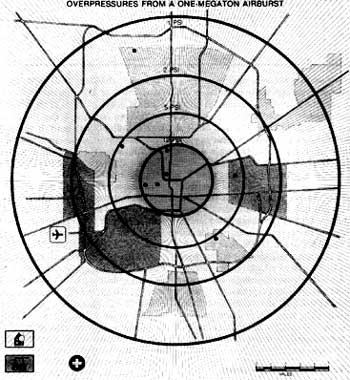
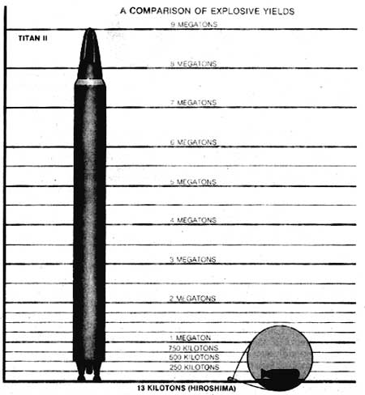

Preventing nuclear war is the most important ecological, political, and moral issue of our time.
The facts are these. One: Nuclear war would be the most devastating holocaust the world has ever known. It's even possible that an atomic Armageddon would eliminate life on this planet. Two: The chances for nuclear warwhether accidental or deliberate-are currently increasing because the two superpowers are starting to move from a deterrence capability to a first-strike stance . . . that is, from weapons that are most effective as defensive guardians of one's own nation to those that, by design, would be most-or, in some cases, only-effective if used to initiate a global war.
On the other hand, although all of us often feel overwhelmed and powerless in the face of this massive threat, only all of us can deter it. So we've provided an analysis of what individuals can do to help prevent a nuclear war.
We will begin at the end-by discussing the atomic holocaust itself. Ignoring the possible consequences of such a conflict-just because they aren't pleasurable to think about-is a sure way to increase the chances that we will have to face them.
Part I: The Consequences of Nuclear War
Nearly all the nuclear weapons in strategic arsenals are fission-fusion-fission devices, capable of vastly greater explosive power than either of the two weapons that were dropped on Hiroshima and Nagasaki. A fissionable plutonium device fuses deuterium and tritium (these isotopes of hydrogen give such a weapon the name hydrogen bomb), which in turn causes a shell of uranium to fission. With this methodology, weapons with power equal to that of more than 20,000,000 tons (20 megatons) of TNT have been exploded. For comparison, the first fission explosion at Alamogordo, New Mexico, on July 16, 1945, yielded about 20,000 tons (20 kilotons) of TNT equivalent. The Hiroshima and Nagasaki bombs were about 13 and 22 kilotons, respectively.
Most of the strategic weapons poised for use by the two superpowers are not the tremendously powerful multimegaton devices, though. The arsenals consist largely of bombs that would yield between 200 kilotons and one megaton in explosive potential, though a few of the antiquated very large bombs are still deployed. Improved accuracy has made the huge weapons generally unnecessary for striking protected targets, and a blanket attack with several small weapons is expected to be more effective against urban or industrial areas than a single very large bomb would be. In fact, eight 40-kiloton bombs, equal to 320,000 tons of TNT, would wipe out as much area as would a single 1-megaton weapon that's the equivalent of 1,000,000 tons.
WAR
To estimate what the effects of an all-out nuclear war might be, some assumptions must be made about how and when it would take place: how many weapons, what targets, whether the warheads burst in the air or on the ground, what wind patterns prevail, what time of day, etc. In The Aftermath: The Human and Ecological Consequences of Nuclear War, the Ambio Advisory Group of the Royal Swedish Academy of Sciences describes one possible scenario. The attack takes place at 11:00 AM New York time (6:00 PM Moscow time) on a weekday in June and involves the use of about half of the available arsenals: 14,747 warheads of about 5,742 megatons. Ground bursts are used for 4,970 warheads (1,941 megatons) targeted at cities in the Northern Hemisphere, 3,136 bombs (701 megatons) are detonated in the air over industrial and energy targets in both hemispheres, 6,620 weapons totaling 2,960 megatons are exploded on the ground at military targets (including civilian airports that can handle jets), and 21 warheads of 140 megatons are used to close maritime straits.
All cities of greater than 100,000 population in the Northern Hemisphere and greater than 500,000 in the Southern Hemisphere are targets, and the scientists estimate that more than half of those urban residents-in the neighborhood of 750,000,000 peoplewould die from the immediate blast, thermal, and radiation effects, and 340,000,000 would be injured. This coincides with the estimates of other scientific teams that in a war involving about half of the available strategic warheads, between 750,000,000 and 1,250,000,000 people will die in short order.
And what of those who survive the immediate effects of the war? Clouds of radioactive dust will spread downwind from the locations of ground bursts-notably the sites of missile silos. In the U.S., many of the roughly 100,000,000 people who survive the initial attack will be killed by the radioactivity within four days of the conflagration. At least 600 rems will fall on most of North and South Dakota, Iowa, Missouri, and Nebraska; on much of Delaware, Indiana, Illinois, Kansas, Kentucky, Maryland, Massachusetts, Michigan, Montana, New York, Virginia, West Virginia, and Wyoming; and on parts of Alabama, Arizona, Arkansas, Georgia, Mississippi, New Hampshire, New Mexico, Tennessee, Texas, and Vermont . . . from an attack just on U.S. strategic missile silos. This amount of radiation will kill more than half of those exposed. Hot spots, where the fallout will quickly be lethal to most of those exposed, will occur from unpredictable events such as rainstorms. Those affected will perish from burns to the skin or from drinking contaminated water.
After the initial week, the number of new casualties from fallout will drop considerably, but the nuclear debris will continue to keep the land in the Northern Hemisphere blanketed in radiation for centuries. In fact, the middle latitudes of the Northern Hemisphere could receive an average dose of 50 rads: Most of the cropland in the Midwest and across the middle- and northeastern U.S. will be too radioactive to allow farming. According to Ambio, if all North Americans stay indoors in the weeks after the attack, 17,000,000 are still likely to die from acute radiation exposure . . . most of them in the U.S. Three percent of the survivors will become sterile, another 1 °7o will die of cancer within 20 years, and the descendants of another 1% will suffer genetic defects within two generations. Across the Atlantic, the entirety of Europe will be so contaminated as to require complete evacuation-an option that would be impossible after nuclear war.
Radiation will not take the majority of lives after a nuclear war, though. Tens of millions of people in the U.S. alone will be injured, many of them with severe burns. Most hospitals and nearly all burn centers are located in urban areas, and it is estimated that 70% of the facilities will be destroyed and their doctors killed. In any event, power won't be available to operate any sophisticated medical equipment that survives the attack. Disease and infection are likely to become rampant: Some estimate that as many as 45,000,000 of the survivors of the attack on the U.S. will die within the first year from cholera, malaria, plague, shigellosis, typhoid fever, yellow fever, tuberculosis, etc.
THE AFTERMATH
Nonetheless, some U.S. (and, no doubt, Soviet) residents are likely to survive. But what will conditions be like? To begin with, food, clean water, and medical attention will be very hard to come by. Most of the crops standing in fields will be too contaminated to eat, and range animals will either die from radiation exposure or have high radiation levels both from direct fallout and from eating contaminated forage. Depending on wind direction, Iowa-which produces 100/0 of the U.S. food supply-could have 40 to 100°70 of its area blanketed with about 1,000 rems of
radiation . . . enough to kill everything except resistant plants and insects. And even in less affected areas, going outside to get food from sheltered warehouses will be very dangerous. Once immediate supplies are depleted, transportation of food into damaged areas will be extremely difficult, since a coordinated attack on the U.S. would destroy at least 95% of its petroleum-refining capability and most of the strategic reserve.
Scientists of the Ambio group and the TTAPS group (an acronym for the members' names), who announced their findings about a "nuclear winter" just a year ago, have calculated that as a result of the firestormsparticularly those in urban areas but including the ignition of huge forest areas-about 225 million tons of smoke will rise into the atmosphere within a few days after a nuclear exchange involving about 5,000 megatons of weapons. Within one to two weeks, this soot will have cut levels of sunlight reaching the earth's surface in the Northern Hemisphere to about 1070 of the norm. Global wind patterns will distribute the smoke, closing in previously unaffected areas and distributing the particles into the Southern Hemisphere, where light levels may drop to about 10% of the usual amount.
Within three to four weeks of the 5,000megaton war, Northern Hemisphere land temperatures could drop as low as -10°F (-23°C). Temperatures will remain below freezing on the continents for about a year. Surprisingly, even a "limited" 100-megaton attack on cities could produce a cooling effect nearly as severe. This is because urban areas provide so much combustible material of a particle size that's very effective in shielding sunlight. The predicted drop in temperature is at least 10°Cten times the 1°C change that climatologists consider to be significant. Coastal areas will be less affected than continental centers; because of the thermal mass of the oceans. This increase in temperature contrast between coastal and inland zones is likely to produce heavy precipitation along the continental margins, most of which will fall as snow. Inland, however, very little precipitation will fall.
These conditions will have profound effects on all life. Even plants that are capable of withstanding normally harsh winters will be killed by the sudden change in temperature. Moreover, light levels will be too low to sustain growth. Radiation alone will wipe out about 2.5070 of the Northern Hemisphere's population of conifer trees, which are nearly as sensitive to its effects as mammals are.
Large nuclear airbursts produce great quantities of nitrogen oxides, which rise high into the atmosphere, disturbing the ozone layer. Ozone is what shields us from the full intensity of ultraviolet (UV) radiation from the sun. Though UV will be attenuated by the soot and dust in the atmosphere for some weeks, once the skies begin to clear, UV doses will increase by about 50 times. This will destroy or decrease the productivity of plants that have mariaged to survive other effects. Marine plankton production in the very important surface waters will be severely decreased, which will dramatically affect the entire marine food chain. In addition, increased ultraviolet light suppresses the immune systems of humans and other mammals, and causes corneal damage and cataracts in the eyes. Animals that a;e unable to shield their eyes may become blind. It will take more than a year for the ozone layer to return to normal levels.
A further concern is the levels of pollutants in the atmosphere after a nuclear war. Chemical facilities will be demolished, and large quantities of toxic and carcinogenic com pounds will circulate in the air and water.
It's quite obvious that nuclear war, even of a limited scope, would be an environmental disaster unparalleled in human history. It's not possible to say with any confidence whether or not any human beings would survive the longterm effects. But it certainly is accurate to say that after a nuclear war human societies would no longer exist in the forms that we've known them and that the environment, including nearly all ecological systems, would be profoundly altered.
That is what we have to avoid. Yet the arms race has grown beyond all rational bounds. The superpowers have a total of about 50,000 nuclear weapons (U.S. 30,000, U.S.S.R. 20,000) . . . and the world's nuclear arsenals are the equivalent of a million times the explosive power of the Hiroshima bomb. In other words, we now have the nuclear equivalent of four tons of TNT for every man, woman, and child on earth.
Pressure and heat would directly or indirectly produce most of the casualties if a one-megaton bomb were detonated in the air over a typical U.S. city. 12 psi or greater (up to 2-1/2 miles): All but the most heavily reinforced concrete buildings are destroyed; 100% fatalities. 12 psi to 5 psi (2-1/2 to 4-1/2 miles): Frame and brick buildings are destroyed; combustible materials ignite spontaneously; 100% fatalities. 5 psi to 2 psi' (4-1/2 to 9 miles): Some combustible materials ignite spontaneously; extensive damage to buildings; third-degree burns out to about 7 miles; greater than 50% casualties. 2 psi to 1 psi (9 miles to 13 miles): Some persons are injured by flying debris; loss of eyesight; burn and radiation injuries; immediate fatalities less than 25%.
Consider the destructive potential carried by just one Poseidon submarine. A single such ship carries more explosive power than was used in all of World War II. It can land the equivalent of three Hiroshimas on every Soviet city with over 100,000 people. And we have 31 such submarines.
Nuclear deterrence may be, at present, a necessity . . . but the amount of deterrence both superpowers currently have is a potentially fatal folly. Yet-to look just at our own country-the U.S. is building three more nuclear bombs every day. The current administration plans to add 17,000-let's write that out: seventeen thousand-more atomic weapons to our arsenal within the next decade.
Amazingly enough, though, the modern world's absurd atomic expansionism is not the major danger. Both superpowers are currently escalating the arms race in a new direction, one that will make the hair trigger of nuclear war more sensitive than ever before . . . as you'll now see.
Part II: From Deterrence to First Strike
We've been taught that the premise of the arms race is that nuclear war can be prevented by making the consequences of aggression too hideous to risk. An attack by one side would unleash a response so destructive as to leave little to conquer in either nation. This rationale for nuclear weapons is called deterrence. Horrid as the concept is, it has a certain logic to it: The threat of an annihilating response, combined with a significant amount of luck, has at least kept the bomb from being used against people since World War II.
Unfortunately, as you're about to see, response to a surprise attack is no longer necessarily the purpose for which the world's nuclear arsenals are being configured. The doomsday machine has become a weapon for waging a frightening political and economic world war of superiority between the United States and the Soviet Union.
In using such an awesomely destructive force for comparatively petty ends, the world's leaders apparently have forgotten the first rule of firearms safety: Never point a gun at anything you don't intend to shoot. When, not if, the inevitable happens and the nuclear guns go off, we pawns of this chess game will become the real losers. Today is perilously close to our last chance to understand what the weapons are, what our leaders intend to do with them, and what will happen if this madness continues.
Both superpowers have justified huge nuclear weapons budgets as necessary for "defense." However, as of 1984, approximately 90% of U.S. nuclear weapons are aimed at military targets in the Soviet Union (and we can assume that the Russians have a similar deployment). If our nuclear weapons exist to deter an attack by the U.S.S.R., why should we aim at missile silos from which the rockets already will have been launched?
The answer of course is that deterrencewhether by intention or by default to the onward march of technology-is dead and has been replaced by a first-strike policy. The prevailing U.S. nuclear military strategy, as outlined in Presidential Directive 59 of 1979 and confirmed in the Five Year Defense Guidance Plan of 1982, is counterforce, which seems to be a sort of doublespeak for first strike. This strategy, though military planners are loath to say so outright, clearly involves using nuclear weapons first. In a counterforce strike, one nation-perhaps spurred by escalating political tensions-attempts to render its adversary's response capability useless . . . with what is sometimes called a preemptive strike. Some military planners, and they are apparently the ones who presently have influence, actually believe that a nuclear war can be initiated, fought over a protracted period, and won by knocking out the other side's offensive weapons.
MX
A first-strike nuclear arsenal logically consists of weapons that are very accurate (to insure destruction of the opponent's hardened-or protected-missile silos) and not necessarily very resistant to attack themselves (since they would be used first-or, at the very least, launched before enemy missiles could reach them). The latest Department of Defense missile, the MX, fits this description perfectly. Its accuracy is reported to be about 300 feet over a range of more than 7,000 miles, and talk of fitting these weapons with special hardened silos or mobile launch sites has largely been abandoned. Seemingly, there are only three rationales for the MX: Either the U.S. plans to use it first, or it plans to develop the ability to launch when there's evidence-that Soviet rockets have been launched, or it doesn't think that the Soviet ICBM force is a credible threat.
Of course, even a severely disabled MX system could deliver 9n awesome response to a surprise attack from the Soviet Union. Ten of these rockets, carrying ten independently targetable warheads each, could wipe out most of the U.S.S.R.'s urban population and destroy its industrial capacity . . . if that was what they were intended for. But strategical ly, the MX is the wrong weapon for deterrence. It would be much wiser to launch these vulnerable weapons before they're hit. Hence the decision to respond to an attack (evidenced by exploding nuclear weapons) becomes the decision to launch when the enemy launches (evidenced by satellite-borne sensors). This move to launch on warning would reduce decision-making time to between 10 and 15 minutes for the U.S. and-as you'll soon see with the Pershing II-to an even shorter time for the Soviets. Though launch on warning isn't currently the official policy in the U.S. (and probably not in the Soviet Union either), accurate first-strike weapons, such as the MX, dramatically increase the pressure to develop the capability.
The effect of such developments on world tension is obvious. The MX encourages paranoia in the Soviets-because it is so obviously best suited as an offensive, firststrike weapon-and makes it paramount that they be able to launch a retaliatory strike before the MX can knock out their ICBM's. Similarly, the lack of attention to hardening (the ability to withstand nuclear attack) encourages the U.S. to develop the capability to launch when electronically detected evidence shows a surprise attack. Each country ends up with its finger more closely poised over the button. And at the same time, the MX increases the advantage that either side might gain by striking first.
Most of the other weapons that the U.S. and U.S.S.R. are now developing increase tensions in one way or another. The following examples are U.S. systems, simply because this country has always held a technological lead over the U.S.S.R. But if history is any indicator, the Soviets will be able to follow suit within a couple of years . . . and quite likely with greater numbers of weapons.
PERSHING II
Perhaps our most threatening weapon, from the Soviet point of view, is the Perching II-a medium-range, very accurate missile now being deployed in Europe. The Pershing II can reach Moscow in six minutes and reportedly is targeted to wipe out hardened Soviet command and control centers. Because the Pershing has a radar-guided final approach and is steerable, it would land so close to its target that hardening against its blast is practically impossible. What's more, the flight time is so short for its 1,100mile journey that the Soviets would be allowed little time to contemplate a response. Thus, launch on warning becomes imperative.
TRIDENT II
In the past, submarine-launched nuclear weapons have been the stabilizers of the U.S. nuclear arsenal. Because it's so difficult for a sub to determine its own exact location-a necessity for missile guidance-the weapons haven't been accurate enough to use for attacking hardened missile silos. Submarines are also very difficult to detect, making a first strike to wipe them out nearly impossible. Therefore, the best use for a submarine armed with nuclear missiles has been to stand by to deliver a retaliatory strike-the essence of deterrence. At this time, however, the U.S. is preparing to deploy the Trident II class submarines, which will have satellite-guided weapons with accuracy sufcient to attack Soviet nuclear missile silos. This is yet another serious threat to the Soviets and, once again, will encourage them to adopt a launchon-warning policy.
AIR-LAUNCHED CRUISE MISSILES
Because the new long-range cruise missiles take several hours to arrive at their targets, they are in one sense stabilizing. Unfortunately, cruise missiles are very hard to detect, either in storage or after they have been launched. In the past, arms limitation talks have been based on the fact that ICBM's and intercontinental bombers are just about impossible to hide from the sensitive eyes of satellites. And submarines can be counted as they come and go from port. Cruise missiles, however, are little more than 20 feet long and can be transported by light trucks, so counting them is difficult. What's more, once they've been launched, cruise missiles travel so close to the ground that they can't be detected by conventional radar systems-making it hard to know when they're coming and even harder to knock them out. Therefore, cruise missiles make arms control verification by satellite impossible, and effectively escalate the arms race.
STAR WARS
In principle, at least, the space-based antimissile weaponry of President Reagan's "Star Wars" concept could be very destabilizing, because it would force the Soviets to build enough weapons to overwhelm the system or to make a first strike before the U.S. finished developing a thorough and reliable missile defense.
However, there's little possibility that Mr. Reagan's fantasy weaponry can be developed in the near future, if ever. To give just one opinion, MIT physicist Kosta Tsipis has estimated that if the appropriate weapons could be developed (an unlikely event), it would take thousands of years for ten space shuttles to haul all the paraphernalia into space. Thus Star Wars remains a troubling idea, but one that's pretty much irrelevant to the immediate question of the survival of civilization.
RETHINK
There has been in the past a near inevitability about nuclear arms proliferation. It's been hard to imagine that mare weapons could make us less secure, or that improved technology could increase the likelihood of a nuclear war. But as you've just seen, the availability and accuracy of today's (and tomorrow's) weapons seem to be driving us toward doing the unthinkable again. Nonetheless, blame doesn't need to be placed, nor do moral indictments need to be made.
Value judgments and assumptions about peoples' personalities must be set aside when we discuss the fate of the earth. We, the people of planet earth as a whole, are now faced with an unwinnable situation. Neither the Soviet Union nor the United States will ever be able to accept a solution that permits the other nation to be dominant. And parity, a balance of power, is practically impossible because there seems little chance that the two nations can adopt the same view of what strategic balance consists of. On both sides, military planners, civilian and in uniform, continue to think in terms of warfare: fighting and winning. They have not yet faced the fact that with nuclear weapons, combat, honor, and triumph no longer exist. Albert Einstein said, "The unleashed power of the atom has changed everything save our modes of thinking, and we thus drift toward unparalleled catastrophes." Until the fallacy of dominance is exposed, understood, and discarded, life on earth will be in ever greater peril.
Part III: Creating Peace
When the Lovinses (the Plowboy interviewees of issue 88) accepted a Right Livelihood Award in Stockholm last December, they said. "Peace will break out when enough of us decide we really care about peace and when we show that in our lives."
Indeed, we must each take personal responsibility for creating peace. And whiledue to space limitations-this article will focus only on political actions, there are many ways to work for peace. As Dwight Eisenhower once said, "People in the long run are going to do more to promote peace than our government."
LEGISLATION
There are four pieces of peace-related legislation currently working their way through the halls of Congress. (At the time of this writing-mid-August-none of them has reached
the floor of the House or Senate for a vote.) Your continued support, by writing and phoning your elected officials, can make a big difference in the future of these bills.
[1] The Arms Race Moratorium Act. The first, and potentially most important, bill involves the new quick freeze concept. The original freeze idea, that the United States and Soviet Union should adopt "a mutual freeze on the testing, production, and deployment of nuclear weapons and of missiles and new aircraft designed primarily to deliver nuclear weapons," gathered a great deal of public support two years ago. Indeed, polls have consistently shown that anywhere from twothirds to 83°7o of all Americans favor a mutual, verifiable, nuclear arms freeze. But the freeze itself got stuck in arguments about its verifiability and opposition from the current administration. To counter these two problems, peace workers have come up with the simpler concept of quick freeze.
This first step toward a full freeze (and, of course, the full freeze itself was always intended as a first step toward an eventual reduction in nuclear arms) focuses on the areas everyone agrees are possible to verify: testing and large-scale deployment. It leaves out production (which takes place in factories and is harder to spot with spy satellites) and the deployment of small, tactical nuclear weapons.
The quick freeze also empowers Congress to initiate the moratorium, if the Soviets agree to it, by ceasing all funding of the frozen areas. This skirts the possible intransigence of a particular presidential administration.
There are two versions of this bill in Congress now: H.R. 5571 (the House version, introduced by Representatives Jim Leach and Edward Markey) and S. 2634 (the Senate version, introduced by Senators Mark Hatfield and Edward Kennedy). In addition, Senator Claiborne Pell intends to introduce an alter native quick freeze bill in the Senate that will differ in only a few details.
The quick freeze is intended to stop the development of first-strike capability on both sides-the dangers of which we've already recited in detail-while a comprehensive freeze is being negotiated. It will be enacted only if and as long as the Soviets comply with it. And now is the ideal time to implement it, while there is rough parity in weapons capacity between the superpowers . . . so neither nation would feel itself frozen at a disadvantage. (As the Defense Department's own 1982 annual report states, "The U.S. and the U.S.S.R. are roughly equal in strategic nuclear power.")
[2] The Nuclear Test Ban Challenge. Introduced in the House by Representatives Barbara Boxer and Nicholas Mavroules, H.J.RES. 441 would provide that the U.S. simply announce to the Soviet Union that we will suspend all testing of nuclear weapons and challenge the Soviets (and other nations) to do likewise. We would then resume testing only if the Soviets did.
[3]The Economic Conversion Act. H.R. 4805, introduced by Nicholas Mavroules, would help us move from a war- to a peacemaking economy by providing advance notice, along with employee retraining and temporary economic security, whenever a $10,000,000 or greater defense contract was going to be terminated. The act would require no additional federal funding-money saved from canceled defense contracts would more than pay for it!
[4] The National Peace Academy. Last, Senate bill 564 would provide for the establishment of a National Peace Academy to train individuals in nonviolent conflict resolution, negotiating skills, and other positive ways to promote peace.
Prevention of nuclear war is the most pragmatic policy for our times. We who point to the danger of nuclear war are the realists. Those who deny this danger, live in a dream world.
-Rear Admiral
Gene R. La Rocque
THE VOTE
As Dr. Helen Caldicott of Physicians for Social Responsibility has said, "In a democracy, everyone pushes the button." And let's face it: The simplest, most direct way for us all to keep from pushing the button is to pull the lover . . . for the candidates most oriented toward peace. Sure, our defense policy is only one issue in the November election, but can anyone deny that the survival of our civilization-and perhaps of all life on earth-is without doubt the most important issue? The economy, social services, ordinary international politics-all of these die if we do. All pale beside survival.
With that in mind, MOTHER contacted both presidential candidates' offices in early June with this question: "If elected president, what specifically will you do to prevent nuclear war?" After months of follow-up calls and letters on our part, we finally got written replies from the Reagan and Mondale camps. We also, on our own, studied both men's records on arms control, so we could share with you the candidates' past deeds as well as their present words.
RONALD REAGAN
Here, in full, is Ronald Reagan's response to our question:
I have no higher priority than removing the threat of nuclear war and seeking the international stability necessary for true and lasting peace. My Administration is dedicated to building a safer, more prosperous world for all peoples; one in which individual rights are respected and democratic freedoms can flourish. These are honorable goals, and they are shared by freedomloving people everywhere.
Our foreign and defense policies rest on the twin pillars of dialogue and defense-on a search for verifiable arms reductions and on our strong deterrent forces. We know that the chance for a secure peace and the preservation of our freedoms is not enhanced by weakness. But we also recognize the importance of dialogue with our adversaries. Though we must be honest in recognizing differences between the United States and the Soviet Union, we must always be willing to resolve those differences by peaceful means.
That is why we have been working so hard to convince the Soviet Union to join us in a spirit of comity and cooperation to achieve real and equitable reductions in the levels of nuclear arms. We have put forward constructive proposals to reduce-not just freeze-the already high levels of nuclear arsenals by 50% in strategic ballistic missiles and by the elimination of the most threatening class of intermediate-range nuclear missiles. We just concluded an agreement to improve the U.S.-Soviet "Hotline" to reduce the risk of misunderstanding in times of crisis, and we have recently renewed the "Incidents at Sea" agreement.
As part of our far-reaching arms control agenda, we have also proposed security- and confidencebuilding measures, as well as major reductions to equal levels of conventional forces in Europe; a complete and verifiable ban on chemical weapons; improved verification of nuclear testing limitations and other important arms control steps.
In each of these efforts, we have acted seriously and in good faith, and the US. has carefully considered all proposals made by the Soviet Union. 1 have repeatedly expressed my willingness to meet at any time with the Soviet leadership to discuss arms reduction proposals.
Despite all these and other initiatives, the
Soviet Union walked out of the IntermediateRange Nuclear Force (INF) talks and has still failed to agree to resume the Strategic Arms Reduction Talks (START). We have expressed our willingness to enter into negotiations on space-based weapons, but we regret Soviet inaction on other strategic negotiations and remain ready to resume talks immediately, without preconditions. In the meantime, the United States is continuing to carry out its obligations and commitments under previous arms control treaties, and we are calling upon the Soviets to demonstrate good will and restraint by doing the same.
But the response to Soviet intransigence should not be unilateral disarmament or a one-sided nuclear freeze. To do that would cast doubt on the resolve of the United States and its allies and would reward the Soviets, both for their unparalleled military buildup of the past decade and for refusing to negotiate. That can only encourage the Soviets to ignore our arms control efforts, endangering our own security and the cause of world peace.
Instead, my Administration is committed to seeking what has been the goal of all civilized nations since the dawn of the nuclear age: genuine arms control agreements and real reductions in the world's nuclear arsenals.
Our door will remain open to all initiatives that will reduce tensions and improve mutual understanding. We seek to end forever the threat of nuclear war, knowing that to do so would be to leave a legacy of peace as the inheritance for generations to come.
And here are his actions in the area of arms control:
* For the first time in 15 years, there are no formal talks between the superpowers concerning the limitation of any aspect of the arms race.
* The current administration is pursuing the largest escalation of the arms race in history. Military spending has risen from $160 billion in 1981 to a projected $368 billion by 1986. The Reagan administration plans to add 17,000 more nuclear weapons (for a total of 28,000 new warheads) to our arsenal in the next decade. And in January, President Reagan asked for $24 billion in additional funds for Star Wars satellite weaponry.
* Reagan has loosened restrictions on the export of nuclear fuel and technology to other countries, thus helping to spread bombbuilding capacity to countries such as South Africa, Argentina, and Brazil.
* He has opposed the mutual, verifiable freeze in all its forms.
* And, to look at his record before he became president, Ronald Reagan has opposed every major nuclear arms treaty ever negoti ated-from the Limited Nuclear Test Ban of 1963 to SALT II of 1980.
We have grasped the mystery of the atom and rejected the Sermon on the Mount .... Ours is a world of nuclear giants and ethical infants. We know more about war than we know about peace, more about killing than we do about living.
- General Omar Bradley
WALTER MONDALE
Here is Walter Mondale's complete reply to the question "If elected president, what specifically will you do to prevent nuclear war?" I believe that there is no higher priority than the prevention of nuclear war.
That is why I support a bilateral verifiable nuclear freeze, leading to major reductions in nuclear arsenals on both sides. That is also why 1 intend to challenge the Soviets to accept temporary, mutual, and verifiable moratoria such as on underground nuclear testing and testing and deployment of space weapons.
As 1 have said before, the risk of war cannot be eliminated overnight. But every day it can be either increased or decreased. And one of the surest ways to increase it is to cut off communications.
Unfortunately, after almost four years in of fice, President Reagan has made no progress in dialogue with our adversaries. He has gotten no results, and he has opposed the results of negotiations by past Presidents. When 1 am elected I will make negotiation a priority from the first day of my administration, not an eleventh hour event at the end of my term. I will seek annual summit conferences with the Soviet Union. Serious progress toward reducing the danger of war requires more intense and consistent efforts at firm but genuine negotiation.
The great challenge to us as a nation is to reduce the danger of war without raising a risk to our security. We require a strong defense, but one in which we increase our reliance on conventional forces rather then nuclear firepower. We also need to reform procurement practices, to avoid waste and unnecessary duplication. My administration will put primary emphasis on improving conventional forces and their preparedness, and on efficiency in management.
Other measures 1 would pursue include reaffirming our commitment to the ABM treaty, renewed efforts against proliferation of nuclear weapons, and the establishment of U.S.-Soviet nuclear risk reduction centers and other improved communications.
1 have long experience in dealing with the problems of nuclear arms control, and a heartfelt appreciation of the magnitude of the task. As a Senator I consistently supported arms control initiatives, and as Vice President I was heavily involved in the development of arms control policy, particularly on the SALT II treaty, which President Reagan has unfortunately rejected.
Our national interest and our survival require that we find a safe and secure way to lower ten sions with the Soviet Union. We must have no illusions about the necessity to deter the Soviets from aggression, but we must also find better ways to meet them on the common ground of survival. With the help of the American people, 1 intend to accomplish both tasks as President.
And here are his major deeds in the area of arms control:
* As a senator in Washington from 1965 to 1976, he consistently voted for arms control measures. Specifically, he voted for SALT I (which contained the Anti-Ballistic Missile Treaty), and against development of the Trident submarine, the B-1 bomber, MIRVed (Multiple Independently-Targetable Reentry Vehicles) missiles, Minuteman II, and a counterforce capability.
* As vice president under Carter, Mondale worked hard to secure congressional endorsement of the SALT II treaty, which the Soviets ratified but our country did not.
CONGRESS
Unfortunately, we don't have room to list the voting records of all 535 congressional incumbents on arms control issues. But you can write SANE, 711 G St. S.E., Washington, DC 20003, and request a copy of "The SANE Voting Record, 1983," which lists each congressperson's record and rating. Or call SANE (202/546-7100) and ask for your incumbents' ratings on arms control.
THE BEGINNING
Enough. Let us all act to help save ourselves. And remember, if you as an individual have chosen to make personal preparations for possible postwar survival, please also dedicate yourself to preventing nuclear war in the first place.
Let us work to make Jesus' words "Peace be with you" true for everyone . . . today and tomorrow
|
 |
 |
|